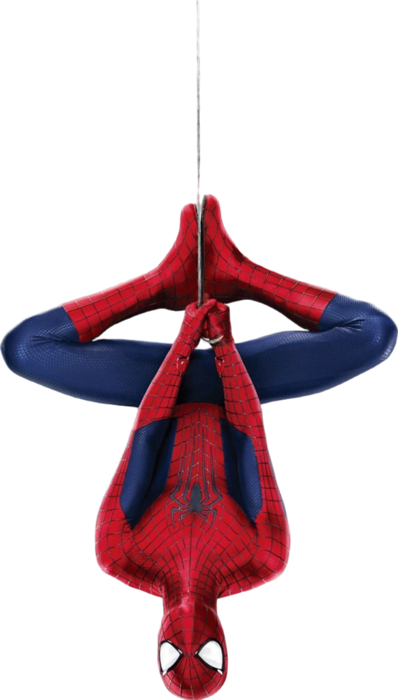

❤︎Urutan Film Spiderman❤︎

"Spider-Man pertama" bisa merujuk pada debut karakter di komik tahun 1962, atau film layar lebarnya yang dirilis tahun 2002, yang dibintangi Tobey Maguire sebagai Peter Parker dan disutradarai oleh Sam Raimi. Film tahun 2002 menceritakan asal-usul Peter Parker setelah digigit laba-laba yang sudah direkayasa secara genetik, yang memberinya kekuatan super, serta memperkenalkan musuhnya, Green Goblin. Latar belakang. Nama asli Spider-Man adalah Peter Parker. Ia tinggal bersama paman dan bibinya di sebuah apartemen di Queens, Kota New York. Sejak kecil ia sudah menyukai tetangganya yang bernama Mary Jane Watson. Awal mula ia menjadi Spider-Man ialah ketika ia mengunjungi sebuah institut milik Norman Osborn.
Berikut ringkasan film Spider-Man dari yang pertama :
🕷️ 1. Spider-Man (2002)
Pemeran utama: Tobey Maguire
Sutradara: Sam Raimi
Peter Parker, seorang remaja kutu buku, digigit laba-laba hasil rekayasa genetika dan mendapat kekuatan super seperti laba-laba. Ia kehilangan pamannya, Ben, yang tewas karena kesalahannya sendiri, dan belajar nilai hidup dari pesan: "With great power comes great responsibility."
Musuh utamanya adalah Green Goblin (Norman Osborn), ayah dari sahabatnya, Harry. Di akhir film, Peter memilih menjauh dari kekasihnya, Mary Jane, demi melindunginya.
🕷️ 2. Spider-Man 2 (2004)
Pemeran utama: Tobey Maguire
Peter mulai kesulitan menyeimbangkan hidup sebagai mahasiswa dan pahlawan. Ia kehilangan kekuatannya karena stres. Musuh kali ini adalah Dr. Otto Octavius (Doctor Octopus), ilmuwan yang berubah jahat setelah eksperimennya gagal.
Peter akhirnya mendapatkan kembali kekuatannya, menyelamatkan kota, dan Mary Jane mengetahui identitasnya sebagai Spider-Man.
🕷️ 3. Spider-Man 3 (2007)
Pemeran utama: Tobey Maguire
Peter menghadapi beberapa musuh sekaligus: Sandman, Venom, dan Harry Osborn yang menuntut balas atas kematian ayahnya. Peter terpengaruh oleh simbiot hitam (Venom) yang membuatnya agresif. Di akhir film, ia menebus kesalahannya dan berdamai dengan Harry sebelum Harry meninggal.
🕸️ 4. The Amazing Spider-Man (2012)
Pemeran utama: Andrew Garfield
Sutradara: Marc Webb
Versi reboot. Peter menemukan rahasia kematian orang tuanya dan digigit laba-laba hasil percobaan di Oscorp. Ia menjadi Spider-Man dan menghadapi Dr. Curt Connors (The Lizard).
Ia juga menjalin hubungan dengan Gwen Stacy, namun ayah Gwen meninggal dan berpesan agar Peter menjauhinya demi keselamatan Gwen.
🕸️ 5. The Amazing Spider-Man 2 (2014)
Pemeran utama: Andrew Garfield
Peter melawan Electro, Green Goblin (Harry Osborn), dan menghadapi tragedi besar: kematian Gwen Stacy. Film ini menunjukkan sisi emosional Peter dan tanggung jawab besar yang ia pikul sebagai pahlawan.
🕷️ 6. Spider-Man: Homecoming (2017)
Pemeran utama: Tom Holland
Versi MCU (Marvel Cinematic Universe)
Setelah muncul di Captain America: Civil War, Peter kembali ke kehidupannya sebagai pelajar SMA. Ia berusaha membuktikan dirinya kepada Tony Stark (Iron Man).
Musuhnya adalah Vulture (Adrian Toomes), ayah dari gadis yang disukainya. Peter belajar menjadi pahlawan tanpa bergantung pada Iron Man.
🕷️ 7. Spider-Man: Far From Home (2019)
Pemeran utama: Tom Holland
Setelah kematian Tony Stark, Peter berlibur ke Eropa tapi harus menghadapi Mysterio (Quentin Beck) yang menipunya dengan ilusi.
Di akhir film, identitas Peter Parker sebagai Spider-Man terungkap ke publik.
🕷️ 8. Spider-Man: No Way Home (2021)
Pemeran utama: Tom Holland
Karena identitasnya terbongkar, Peter meminta bantuan Doctor Strange untuk membuat semua orang lupa. Namun mantra itu rusak dan membuka multiverse, memunculkan Spider-Man versi Tobey Maguire dan Andrew Garfield.
Mereka bertiga bekerja sama melawan musuh dari semesta lain (Green Goblin, Doc Ock, Electro, dll).
Akhirnya, semua orang benar-benar lupa siapa Peter Parker, dan ia memulai hidup baru sendirian.
|